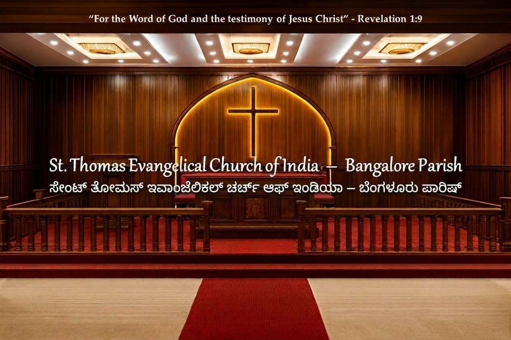
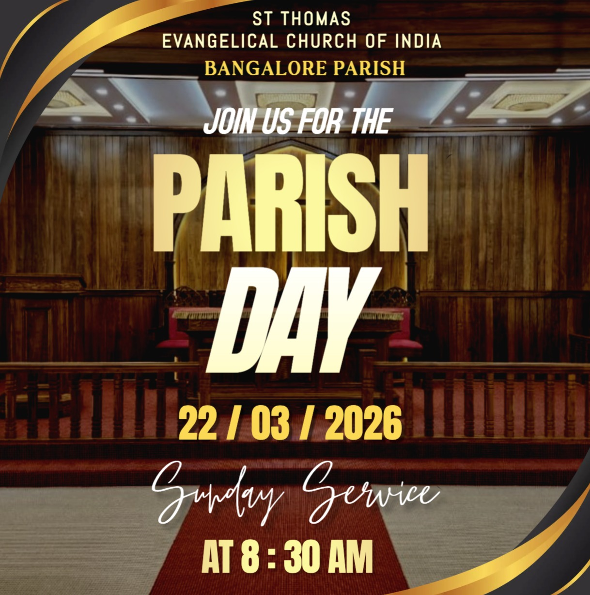

St. Thomas Evangelical Church of India (STECI) is an Evangelical, Episcopal Church which firmly affirms that the Bible is the inspired, inerrant and infallible Word of God. All that is necessary for our salvation and living in righteousness is given in the Bible. It further affirms that the Church has a responsibility to preach the Gospel of Jesus Christ to all the nations of the world, especially to India. The church is engaged in active evangelism. The headquarters of this church is at Thiruvalla, a town in the state of Kerala which is in the Southwestern part of South India.
The Bangalore Parish is one of the many vibrant communities under STECI, located in the heart of Bengaluru (Garden City). It plays an active role in worship, discipleship, and outreach, reflecting the church's broader mission. At St. Thomas Evangelical Church of India [STECI] Bangalore Parish, our desire is to glorify God, share the love of Jesus Christ, and walk together as a family of faith.
🌿 Join Us for Online Worship 🌿
Whether you are a long-time believer, a visitor new to the area, exploring faith, or seeking a church home, you are warmly invited to join us.
If you are away, we warmly encourage you to participate in our parish’s online worship services.
For details and access, please contact our Parish Vicar at: 📞 97426 99915
Parish Programs |

Sunday, 8:30am
Gather in the House of the Lord to raise our voices in praise and worship to Almighty God. It's a time to lift our hearts in reverence, express our gratitude, and remember the sacrifice of Christ through Holy Communion.

Sunday, 11:00am
The Sunday School is focused on nurturing children in biblical teachings, Christian values, and spiritual growth.

2nd Saturday, 4:00pm
Bangalore Parish's Youth Ministry is a vibrant group focused on engaging young people in spiritual growth, fellowship, and service.

1st & 3rd Sundays, 11:00am at church
& Tuesday, 8:30pm (online prayer)
Sevini Samajam (Women's Ministry) described as a pillar of strength for the parish, dedicated to spiritual growth and fellowship.

Friday, 10:00am
Weekly gathering for fasting prayer and spiritual fellowship.

Wednesday, 7:00pm (online)
To spend one hour in dedicated online prayer, lifting up the personal, spiritual, and physical needs of individuals and families before God.

Saturday, 5:00pm
The Choir Practice prepares singers and musicians for Sunday services, special events, and spiritual gatherings.

Friday, 7:00pm (online)
In-depth scripture study and discussion via video conference.
Upcoming Program
Bangalore Center Meeting will be held on
Sunday, 29 March 2026 at 9:30 AM at
Athibele Parish. VBS - April 06 to 08 , Venue - STECI, Bangalore Parish |
STECI Bangalore Parish
#17,18, Church Lane, Defence Colony, Kavery Nagar,
Horamavu Agara, Bangalore 560 013
Vicar: 97426 99915 | Treasurer: 97426 99916
Secretary: secysteciblr@yahoo.com | Treasurer: treassteciblr@yahoo.com